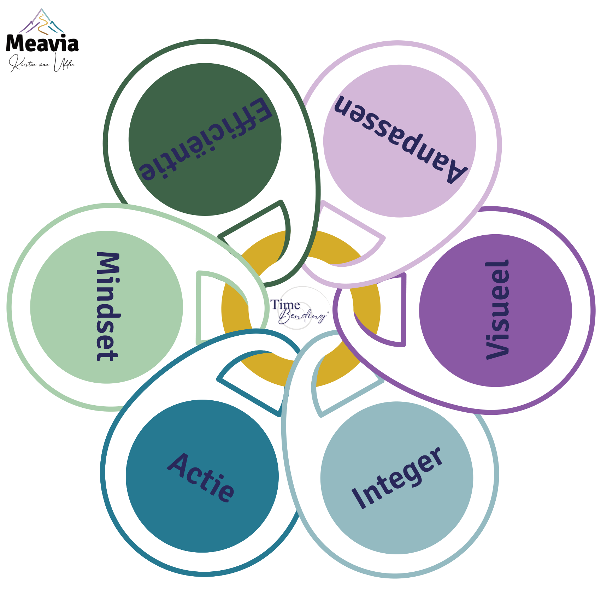

6 sleutels
tot
succes
De sleutels zijn je kompas. Ze brengen je terug naar de kern van wat er werkelijk speelt.
1
2
3
Waar gaat het over?
Beschrijf kort de situatie of het gevoel waarover je wilt nadenken. Het hoeft niet perfect omschreven te zijn.
Hoe ga jij erin?
Kies de manier die nu het beste bij je past.
🔑
Kies een sleutel
Laat het op je inwerken, of gebruik je pendel.
🔍
Ik wil het nog ontdekken
Een paar gerichte vragen helpen je te voelen welke sleutel hier speelt.

Laat het op je inwerken, welke sleutel trekt je aandacht?
Of gebruik je pendel voor de juiste keuze.
Selecteer of klik op een sleutel
–
Vraag 1 van 3

Even afstemmen op jouw situatie...
Timebending®
6 sleutels tot succes
De sleutel die hier aandacht vraagt
Wat deze sleutel je laat zien
Vragen om mee te zitten
Wat er mag bewegen
Reageer op wat je leest. Wat raakt je, wat herkent je, of wat wil je verder onderzoeken? Schrijf minimaal een zin zodat het gesprek ergens over kan gaan.